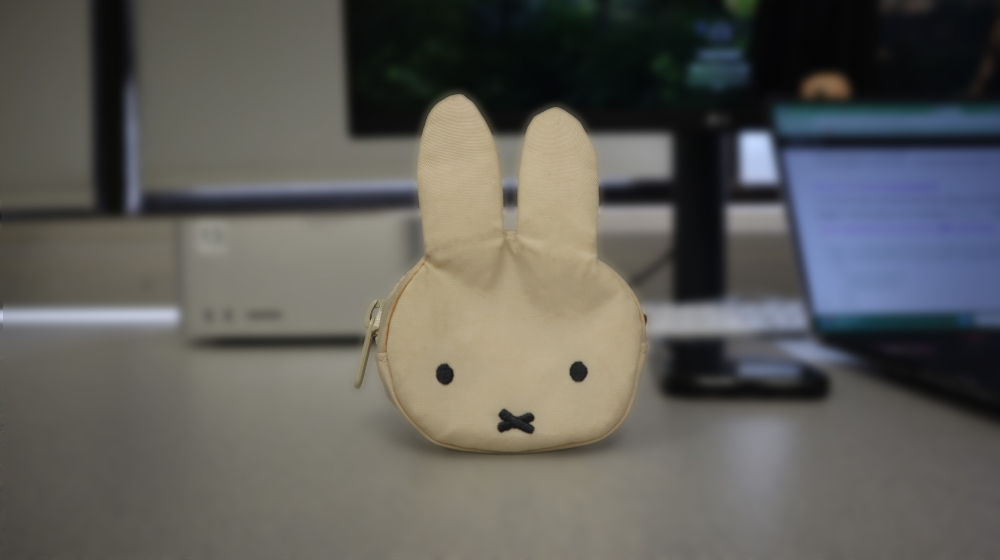

Settings: f/3.5, 1/2500s, ISO 5000. Subject is sharp and background is blurred.

Settings: f/14, 1/160s, ISO 5000. Foreground and background appear sharp.
For Homework 3, I posted 4 JPG images total on this single page (homework3.html): a shallow depth of field photo, a deep depth of field photo, a Photoshop blur version, and the original image used for the blur comparison. All images are under 2 MB and saved in the images folder.
| Shallow DoF | Deep DoF |
|---|---|
|
Settings: f/3.5, 1/2500s, ISO 5000. Subject is sharp and background is blurred. |
Settings: f/14, 1/160s, ISO 5000. Foreground and background appear sharp. |
| Photoshop Blur (Blur Gallery) | Original |
|---|---|
|
 I used Filter > Blur Gallery > Field Blur to blur the background while keeping the subject sharp. |

This is the original image before applying the Blur Gallery filter. |
In these photographs, I captured a Miffy bag charm. I chose this object because I liked the silhouette and I thought it would be easy for the camera to identify it as my subject. I initially faced some difficulty with adjusting the camera settings as I was using the Canon DSLR camera whereas the in-class lesson was about Sony. I learned that the Canon is actually a bit more user-friendly as it has a touch-screen interface which makes changing the ISO and Aperture easier.
It was interesting creating the blur in photoshop. It seems that you can achieve an even stronger blur in photoshop than on the cameras and create a very focused image. I noticed that photoshop tends to blur the edges of the image while the camera is pretty good at identifying the background and the subject. In my edited image, I also used the Camera Raw filter to straighten it.